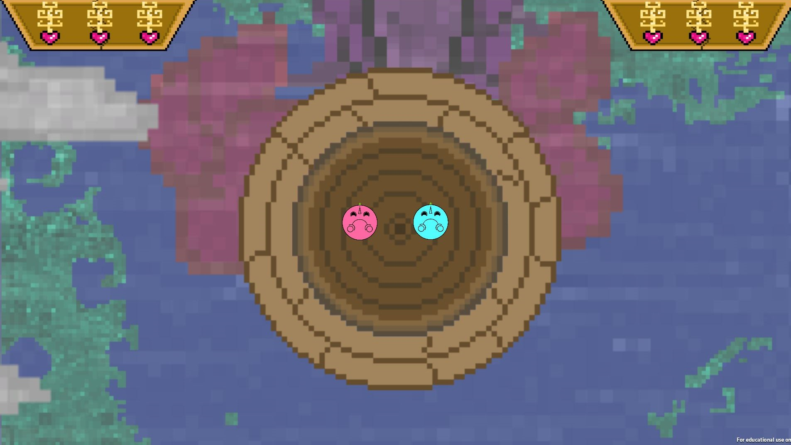
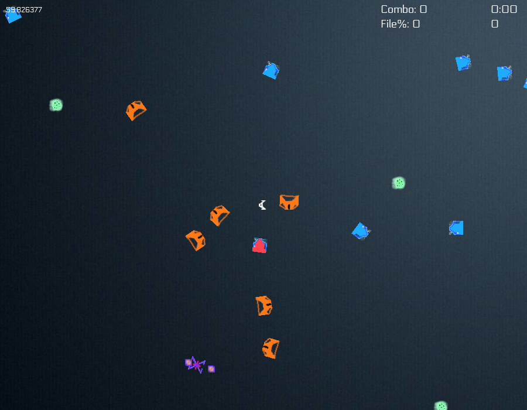

Unity, C# - Fall Semester 2018
Exiled is a top down level-based puzzle game created for my Advanced Seminar in Game Programming course while studying in Montreal. All the code is my own with free assets used for art and audio.
I learned a lot from this project over the course of the four months I worked on it from prototyping and scoping to building and refactoring a codebase. Singletons were invaluable for managing sound and game state data across levels. I also built a random level generator to construct the layouts of my room-based levels. This project also allowed me to utilize some of the AI programming techniques I learned in my Game AI course during the semester. Enemies wander, patrol, and chase.
In all, Exiled was a great learning experience. At the start, I designed the game myself, and by the end, I released the game on Itch.io including a trailer.
Exiled is a top down level-based puzzle game created for my Advanced Seminar in Game Programming course while studying in Montreal. All the code is my own with free assets used for art and audio.
I learned a lot from this project over the course of the four months I worked on it from prototyping and scoping to building and refactoring a codebase. Singletons were invaluable for managing sound and game state data across levels. I also built a random level generator to construct the layouts of my room-based levels. This project also allowed me to utilize some of the AI programming techniques I learned in my Game AI course during the semester. Enemies wander, patrol, and chase.
In all, Exiled was a great learning experience. At the start, I designed the game myself, and by the end, I released the game on Itch.io including a trailer.

Unity, C# - Champlain Montreal Jam (Winter 2018)
MasqueRage is a game that I completed as a team of five for a 72 hour game jam during my semester in Montreal. The theme was Montreal street art. The game is a top down, character-based areana fighter with 17 playable characters.
This project served as an opportunity for me to wear many hats from gameplay coder and build manager to programmer lead and bug smasher. I worked as one of three programmers and organized our hourly meetings and task lists over the course of the game jam. I worked on gameplay code for the arena and match scoring. I also coded three unique characters. The game was a really fun, occasionally hilarious collaborative effort and I was able to grow in a number of ways as a developer.
MasqueRage is a game that I completed as a team of five for a 72 hour game jam during my semester in Montreal. The theme was Montreal street art. The game is a top down, character-based areana fighter with 17 playable characters.
This project served as an opportunity for me to wear many hats from gameplay coder and build manager to programmer lead and bug smasher. I worked as one of three programmers and organized our hourly meetings and task lists over the course of the game jam. I worked on gameplay code for the arena and match scoring. I also coded three unique characters. The game was a really fun, occasionally hilarious collaborative effort and I was able to grow in a number of ways as a developer.

SDL2, C++ - Summer 2018
Final Crusade is a top down arcade shooter built using SDL2 underneath my own wrapper and implementation of game programming patterns. This personal summer project was inspired by the work I did and skills I learned through my Game Architecture course. The game makes use of the Observer, Singleton, and Object Pool programming patterns.
This project was a positive experience for me as it was the first longer term project that I completed from start to finish. I had completed game jams and class projects before hand, but this game forced me to build my own long-term development roadmap, meet devs to playtest the game at my local IGDA meetings, and become intimately familiar with the delicate connection between engine code and gameplay code.
Final Crusade is a top down arcade shooter built using SDL2 underneath my own wrapper and implementation of game programming patterns. This personal summer project was inspired by the work I did and skills I learned through my Game Architecture course. The game makes use of the Observer, Singleton, and Object Pool programming patterns.
This project was a positive experience for me as it was the first longer term project that I completed from start to finish. I had completed game jams and class projects before hand, but this game forced me to build my own long-term development roadmap, meet devs to playtest the game at my local IGDA meetings, and become intimately familiar with the delicate connection between engine code and gameplay code.